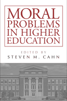

<body bgcolor="#FFFFFF" text="#000000" link="#0000FF" vlink="#CC0000" alink="#CC0000"><center><hr width="350" size="1" align="center" noshade>A reader on the key ethical dilemmas confronting higher education<hr width="350" size="1" align="center" noshade><p><a href="https://cdcshoppingcart.uchicago.edu/Cart/ChicagoBook.aspx?ISBN=9781439906583&&PRESS=temple" target="_top">Buy this book!</a> | <a href="https://cdcshoppingcart.uchicago.edu/Cart/Cart.aspx?PRESS=temple" target="_top">View Cart</a> | <a href="https://cdcshoppingcart.uchicago.edu/Cart/Cart.aspx?PRESS=temple" target="_top">Check Out</a></p><p></p></center><!--none//--><h1>Moral Problems in Higher Education</h1>
<h3>edited by Steven M. Cahn</h3>
<P>cloth 1-4399-0658-0 $99.50, May 11, <FONT COLOR=#990033>Available</FONT>
<br>paper 1-4399-0659-9 $42.95, May 11, <FONT COLOR=#990033>Available</FONT>
<BR> 264 pp
6x9
</P><BLOCKQUOTE><I>"</i>Moral Problems in Higher Education<i> brings together essays on a wide range of central ethical issues in higher education and organizes them in a way that clearly presents the various aspects of the on-going philosophical analysis and debate of each issue. Some of the essays are classics. Others are superb examples of the power of philosophical analysis to elucidate complex topics. All are excellent."</I><BR>&#151<B>Peter J. Markie</B>, Professor/Curators Teaching Professor, Department of Philosophy at the University of Missouri</I></BLOCKQUOTE>
<p><em>Moral Problems in Higher Education</em> brings together key essays that explore ethical issues in academia. The editor and contributors&#8212;all noted philosophers and educators&#8212;consider such topics as academic freedom and tenure, free speech on campus, sexual harassment, preferential student admissions, affirmative action in faculty appointments, and the ideal of a politically neutral university. Chapters address possible restrictions on research because of moral concerns, the structure of peer review, telling the truth to colleagues and students, and concerns raised by intercollegiate athletics.</p>
<p>Cahn selects two key readings in each area to offer a readable introductory guide to these critical subjects for students studying academic ethics and higher education policy. In addition to the selections and a general introduction, Cahn provides study questions for use in the classroom.</p>
<p>Contributors include <i>Scott F. Aikin, Derek Bok, William G. Bowen, Myles Brand, Richard T. DeGeorge, Paul D. Eisenberg, Leslie Pickering Francis, Martin P. Golding, Philip Kitcher, Charles R. Lawrence III, David Lewis, Paul J. Olscamp, Nancy Tuana, David Shatz, George Sher, Robert L. Simon, Robert B. Talisse, Stephan Thernstrom, Abigail Thernstrom, Laurence Thomas, Robert Paul Wolff</i>, and the editor.</p>
<BR>&nbsp;<h2>Excerpt</h2><P>Excerpt available at <a href="http://www.temple.edu/tempress">www.temple.edu/tempress</a></p>
<BR>&nbsp;<h2>Reviews</h2>
<p><i>"</i>Moral Problems in Higher Education<i> is well written and engaging. Cahn draws together a series of thoughtful reflections on important issues facing the academy. This is a very useful book for higher education administration and faculty leaders who should read�and enjoy�it."</i>
<br>&#151<b>Matthew Hartley</b>, Associate Professor and Chair of the Higher Education Division in the School of Education at the University of Pennsylvania
<p><i>"This book would be useful for courses in higher education leadership or new president seminars offered by collegiate associations and schools of education. We yearn for morality in public life, and need more discussion of the moral issues facing higher education." </i><br>&#151<b><i>The New England Journal of Higher Education</i></b>
<BR>&nbsp;<h2>Contents</h2><P>
<p>Preface &bull; Steven M. Cahn</p>
<p><b>I. TENURE</b>
<br>1. The Justification of Academic Tenure &bull; Richard T. De George
<br>2. The Tenure Decision: Two Hard Cases &bull; Paul J. Olscamp</p>
<p><b>II. FREE SPEECH ON CAMPUS</b>
<br>3. Regulating Racist Speech on Campus &bull; Charles R. Lawrence III
<br>4. Campus Speech Restrictions &bull; Martin P. Golding</p>
<p><b>III. SEXUAL HARASSMENT</b>
<br>5. Sexual Harassment: Offers and Coercion &bull; Nancy Tuana
<br>6. Consensual Sex on Campus &bull; Leslie Pickering Francis</p>
<p><b>IV. PREFERENTIAL STUDENT ADMISSIONS</b>
<br>7. The Meaning of &ldquo;Merit&rdquo; &bull; William G. Bowen and Derek Bok
<br>8. Does Your &ldquo;Merit&rdquo; Depend upon Your Race? A Rejoinder to Bowen and Bok &bull; Stephan Thernstrom and Abigail Thernstrom</p>
<p><b>V. PREFERENTIAL FACULTY APPOINTMENTS</b>
<br>9. Two Concepts of Affirmative Action &bull; Steven M. Cahn
<br>10. What Good Am I? &bull; Laurence Thomas</p>
<p><b>VI. INSTITUTIONAL NEUTRALITY</b>
<br>11. Neutrality and Its Critics &bull; Robert Paul Wolff
<br>12. A Defense of the Neutral University &bull; Robert L. Simon</p>
<p><b>VII. RESTRICTING RESEARCH</b>
<br>13. Constraints on Free Inquiry &bull; Philip Kitcher
<br>14. On the Ethics of Inquiry &bull; Robert B. Talisse and Scott F. Aikin</p>
<p><b>VIII. ADVANCING KNOWLEDGE</b>
<br>15. Academic Appointments &bull; David Lewis
<br>16. Peer Review and the Marketplace of Ideas &bull; David Shatz</p>
<p><b>IX. TELLING THE TRUTH</b>
<br>17. The Truth, the Whole Truth, and Nothing but the Truth &bull; Paul D. Eisenberg
<br>18. The Letter Writer&rsquo;s Dilemma &bull; George Sher</p>
<p><b>X. INTERCOLLEGIATE ATHLETICS</b>
<br>19. The Role and Value of Intercollegiate Athletics in Universities &bull; Myles Brand
<br>20. Intercollegiate Athletics and Educational Values: A Case for Compatibility &bull; Robert L. Simon</p>
<p>Contributors</p>
</P><BR>&nbsp;<H2>About the Author(s)</H2>
<P><strong>Steven M. Cahn</strong> is Professor of Philosophy at the Graduate Center of the City University of New York. He is the author or editor of more than forty books, including, most recently, the 25th anniversary edition of <em>Saints and Scamps: Ethics in Academia</em></P>
<BR><H2>Subject Categories</H2>
<p><A HREF="/tempress/education.html" TARGET="_top">Education</a>
<BR><A HREF="/tempress/philosophy.html" TARGET="_top">Philosophy and Ethics</a>
<BR><A HREF="/tempress/political.html" TARGET="_top">Political Science and Public Policy</a>
</p>
<p align="center"><a href="https://cdcshoppingcart.uchicago.edu/Cart/ChicagoBook.aspx?ISBN=9781439906583&&PRESS=temple" target="_top">Buy this book!</a> | <a href="https://cdcshoppingcart.uchicago.edu/Cart/Cart.aspx?PRESS=temple" target="_top">View Cart</a> | <a href="https://cdcshoppingcart.uchicago.edu/Cart/Cart.aspx?PRESS=temple" target="_top">Check Out</a></p><p><font face="Arial" size="1"><a href="copyright.html" onMouseOver="window.status='Web Copyright Policy';return true;" onMouseOut="window.status=''" title="Web Copyright Policy">&copy;</a> 2015 <a href="http://www.temple.edu" target="new" onMouseOver="window.status='Link to Temple University home page';return true;" onMouseOut="window.status=''" title="Link to Temple University home page">Temple University</a>. All Rights Reserved. http://www.temple.edu/tempress/titles/2146_reg.html</font></p>